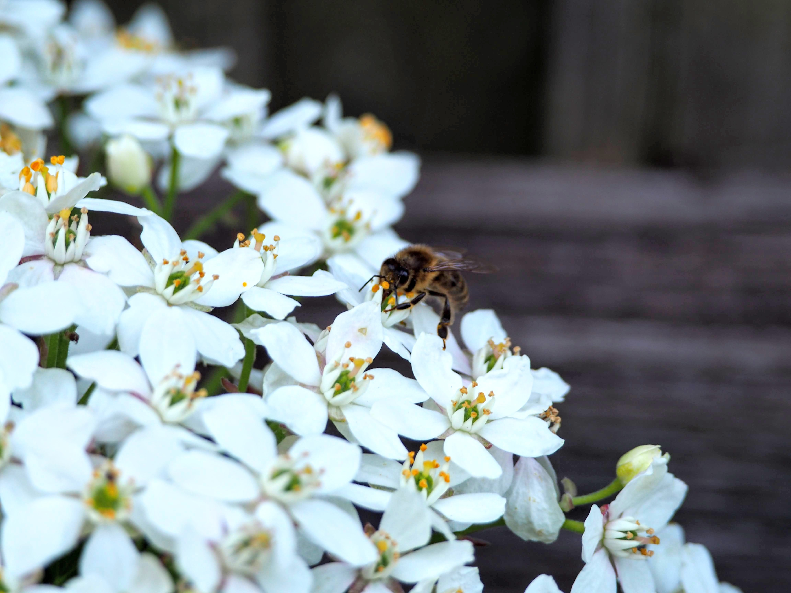
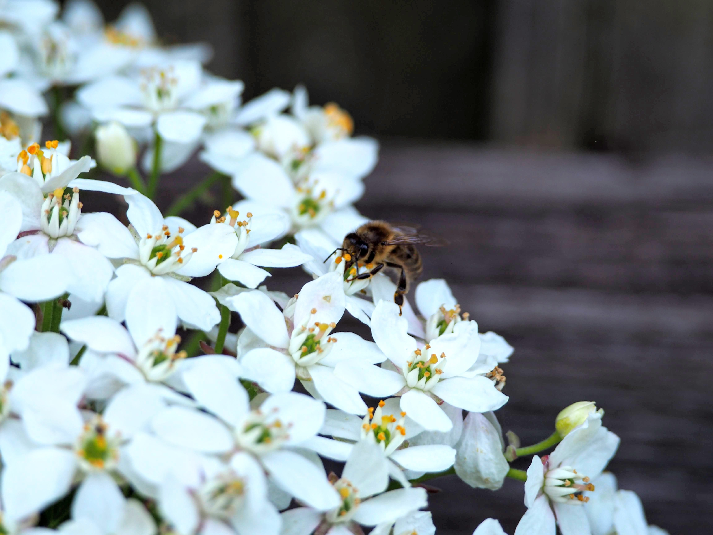

Comment les plantes attirent-elles les abeilles ?
Les plantes dépendent des abeilles et d'autres insectes pour se reproduire, et c'est pourquoi elles se sont adaptées, au fil du temps, afin de les attirer. La grande majorité des plantes à fleurs sont dépendantes des insectes pour leur reproduction sexuée. Si le vent peut se charger de transporter le pollen chez certaines d'entre elles (pollinisation anémophile), chez les autres, les courants d'air ne suffisent pas (pollen trop lourd, trop collant, peu abondant...) et il faut que ce soient des insectes (pollinisation entomophile) qui, en butinant une fleur après l'autre, dispersent le pollen et permettent la fécondation d'une fleur par le pollen d'une autre fleur de la même espèce, située à une distance plus ou moins grande. Abeilles, bourdons, mouches, guêpes, papillons, cétoines et autres petits scarabées... sont autant d'insectes pollinisateurs.
 Mais ces insectes pollinisateurs, encore faut-il les attirer. Car les plantes sont immobiles (et silencieuses) : elles doivent donc déployer des trésors d'ingéniosité pour se faire remarquer de la gent ailée ! Reste donc, comme armes de séduction mises à leur disposition : la couleur, la forme, la taille, et le parfum de leurs fleurs.

Pour attirer les insectes gourmands, rien de tel qu'un parfum ! Les insectes sont très sensibles aux odeurs, grâce aux récepteurs olfactifs situés sur leurs antennes. Les papillons de nuit sont les champions de l'odorat : ils sont capables de repérer une fleur odorante à plusieurs centaines de mètres. C'est d'ailleurs sur le parfum, plus que sur l'aspect, que jouent les espèces végétales à floraison nocturne ou dont les fleurs restent épanouies la nuit afin d'être pollinisées par des insectes nocturnes, comme le jasmin, le chèvrefeuille, le tabac ou la belle de nuit.
Mais le parfum joue aussi son rôle durant la journée : les insectes apprennent à reconnaître le parfum de chaque fleur (constitué d'une association de plusieurs molécules odorantes, qui rend chacun unique), et l'associent à la présence de nectar, de pollen ou de cires odorantes, dont ces insectes se nourrissent. Parmi les fleurs nectarifères les plus parfumées, citons le faux-acacia (robinier), le buddléia ou encore le tilleul... Cependant, les fleurs nectarifères ne sont pas forcément parfumées !
Mais ces insectes pollinisateurs, encore faut-il les attirer. Car les plantes sont immobiles (et silencieuses) : elles doivent donc déployer des trésors d'ingéniosité pour se faire remarquer de la gent ailée ! Reste donc, comme armes de séduction mises à leur disposition : la couleur, la forme, la taille, et le parfum de leurs fleurs.

Pour attirer les insectes gourmands, rien de tel qu'un parfum ! Les insectes sont très sensibles aux odeurs, grâce aux récepteurs olfactifs situés sur leurs antennes. Les papillons de nuit sont les champions de l'odorat : ils sont capables de repérer une fleur odorante à plusieurs centaines de mètres. C'est d'ailleurs sur le parfum, plus que sur l'aspect, que jouent les espèces végétales à floraison nocturne ou dont les fleurs restent épanouies la nuit afin d'être pollinisées par des insectes nocturnes, comme le jasmin, le chèvrefeuille, le tabac ou la belle de nuit.
Mais le parfum joue aussi son rôle durant la journée : les insectes apprennent à reconnaître le parfum de chaque fleur (constitué d'une association de plusieurs molécules odorantes, qui rend chacun unique), et l'associent à la présence de nectar, de pollen ou de cires odorantes, dont ces insectes se nourrissent. Parmi les fleurs nectarifères les plus parfumées, citons le faux-acacia (robinier), le buddléia ou encore le tilleul... Cependant, les fleurs nectarifères ne sont pas forcément parfumées !